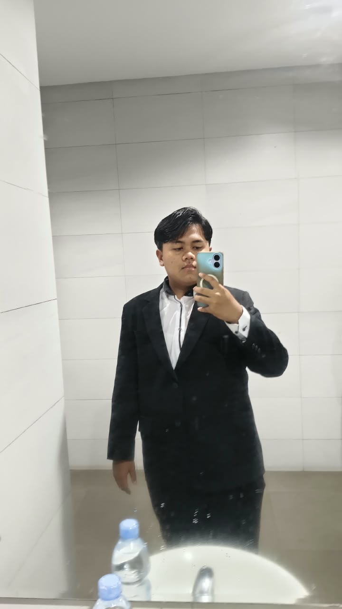

Open to Projects

Saya adalah mahasiswa Hukum Universitas Islam Indonesia yang berdedikasi pada pengembangan hukum, kepemimpinan operasional, dan manajemen organisasi. Berpengalaman memimpin tim eksekutif dalam penyelenggaraan acara besar bertingkat wilayah serta mengelola koordinasi lintas sektor dengan pendekatan logis dan terstruktur. Berbekal pengalaman organisasi di BPH OSIS, Pramuka, SAKA Bhayangkara, serta pelatihan paralegal, saya berfokus pada pembentukan ekosistem kerja yang terorganisir, komunikatif, dan solutif.
Pengalaman & Organisasi
Ketua Pelaksana Hiking Rally 2025
2025
SMAN 1 Banjar
Memimpin dan mengoordinasikan penyelenggaraan kegiatan lintas provinsi West & Central Java.
Anggota BPH OSIS & SAKA Bhayangkara
2023 — 2025
SMAN 1 Banjar
Aktif dalam manajemen kegiatan kesiswaan, kepemimpinan, dan kepanitiaan acara daerah.